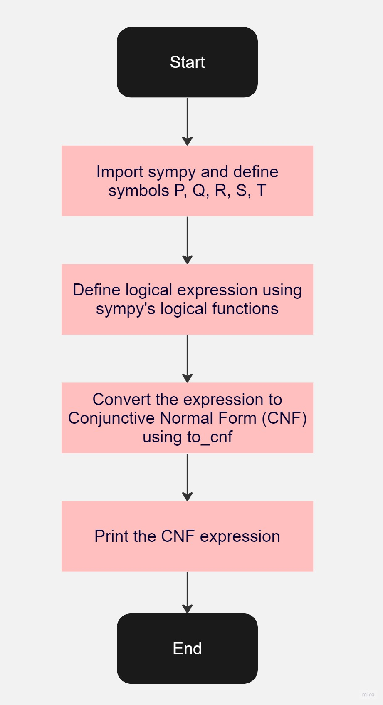

CNF ย่อมาจาก Conjunctive Normal Form หรือรูปแบบปกติประพจน์รวม ทุกประโยคจะเกิดจากการเชื่อมต่อกันของประโยคย่อย
โดยภายในวงเล็บ มีแค่ ตัวดำเนินการ OR (∨) และ นิเสธ (~)เท่านั้น และนอกวงเล็บสามารถมีตัวดำเนินการ AND (∧) ได้ และห้ามมี
ตัวดำเนินการ → และ ↔ ในประโยค สาเหตุที่แปลงในรูปแบบนี้เพราะการต่อวงจรไฟฟ้าจะมีรูปแบบแค่ AND กับ OR และ NOT เท่านั้น ไม่มี → และ ↔
Disjunction คือ ตัวเชื่อมระหว่างวงเล็บ คือตัว ∧ หรือ AND
Conjuction คือ ตัวเชื่อมระหว่างวงเล็บ คือตัว ∨ หรือ OR
ตัวอย่างที่เป็น CNF
1. (A∨B)∧(¬C∨D∨E) — ภายในวงเล็บไม่มี∧
2. (¬A∨B) — ภายในวงเล็บไม่มี∧
3. (A∨¬B∨¬C)∧(D)∧(¬E∨F) — ภายในวงเล็บไม่มี∧
ตัวอย่างที่ไม่เป็น CNF
1. A∨(B∧C) — ภายในวงเล็บมี∧
2. (A→B) — ภายในวงเล็บมี→
3. ¬(A∨B) — มีนิเสธอยู่ข้างนอก
กระบวนการทั่วไปในการแปลงสูตรตรรกะเป็น CNF ประกอบด้วยขั้นตอนหลายอย่าง เช่น
1.Eliminate Equivalences: แทนที่สูตรที่ใช้ตัวดำเนินการ "ก็ต่อเมื่อ" (↔) ด้วยสูตรที่มีเพียงตัวดำเนินการ "ถ้า" (→) และ AND (∧).
2.Eliminate Implications: แทนที่ตัวดำเนินการ ถ้าแล้ว (→) ด้วย OR (∨) และ negation (¬). เช่น A→B จะกลายเป็น ¬A∨B.
3.Move NOTs Inwards: ใช้กฎของ De Morgan เพื่อ "ย้าย" negations เข้าไปภายในสูตรให้ใกล้กับ literals ที่สุด เช่น ¬(A∨B) กลายเป็น ¬A∧¬B.
4.Distribute ANDs over ORs: ใช้การกระจายเพื่อจัดรูปสูตรให้เป็นรูปแบบที่แต่ละ AND มี ORs ภายในเท่านั้น, เช่น A∨(B∧C) กลายเป็น (A∨B)∧(A∨C).
โจทย์: แปลงสูตรตรรกะ แปลงสูตรตรรกะ (P↔(Q∨R))∧(S→¬T) ให้อยู่ในรูปแบบ CNF.
1.SAT Solvers: CNF เป็นรูปแบบมาตรฐานสำหรับการแสดงสูตรตรรกะในการแก้ปัญหา Satisfiability (SAT).
SAT Solvers เป็นโปรแกรมที่สามารถตรวจสอบได้ว่ามีการกำหนดค่าของตัวแปรตรรกะที่ทำให้สูตรตรรกะเป็นจริงหรือไม่
2. การวิเคราะห์และการประมวลผลของสูตรตรรกะ: CNF ให้วิธีที่มีโครงสร้างเพื่อจัดการกับสูตรตรรกะ
ทำให้เหมาะสำหรับการประมวลผลโดยอัลกอริธึมต่างๆ
3.การพิสูจน์ทฤษฎีบทอัตโนมัติ: ในการพิสูจน์ทฤษฎีบท, CNF สามารถใช้เป็นจุดเริ่มต้นในการพิสูจน์โดยอัตโนมัติ
หรือเพื่อทำการทดสอบตรรกะที่ซับซ้อน.
4.การแปลงสูตรตรรกะ: CNF ให้ฐานในการแปลงสูตรตรรกะไปยังรูปแบบที่มีโครงสร้างและสามารถจัดการได้ง่ายขึ้นในด้านการวิเคราะห์ตรรกศาสตร์.
5.การออกแบบวงจรตรรกะ: CNF สามารถใช้เพื่อสร้างและทดสอบวงจรตรรกะในวิทยาการคอมพิวเตอร์
โดยเฉพาะในการออกแบบวงจรดิจิตอล.
ด้านล่างนี้เป็นผังงานที่แสดงขั้นตอนของอัลกอริธึม CNF:
|
|
|
1
2
3
4
5
6
7
8
9
10
11
12
13
14
15
16
17
18
19
20
|
from sympy import symbols
from sympy.logic.boolalg import And, Or, Not, Implies, Equivalent, to_cnf
# Define the symbols (variables) used in the expression
P, Q, R, S, T = symbols('P Q R S T')
# Input expression using sympy's logical functions
# Equivalent(P, Or(Q, R)) represents (P == (Q | R))
# Implies(S, Not(T)) represents (S >> ~T)
input_expr = And(Equivalent(P, Or(Q, R)), Implies(S, Not(T)))
# Convert the expression to Conjunctive Normal Form (CNF)
cnf_expr = to_cnf(input_expr, simplify=True)
# Print the CNF expression
print(cnf_expr)
|
|
|
|
|
(P | ~Q) & (P | ~R) & (~S | ~T) & (Q | R | ~P)
|
CNF Converter
1. Import "sympy":
SymPy ถูกนำเข้ามาใช้เพื่อให้สามารถทำการคำนวณและจัดการกับนิพจน์เชิงตรรกะได้
2. Define Symbols:
กำหนดตัวแปร P,Q,R,S, and T ให้ใช้ในนิพจน์เชิงตรรกะ
3. Create a Logical Expression:
นิพจน์ตรรกะถูกสร้างขึ้นโดยใช้ฟังก์ชันของ SymPy เช่น And, Or, Not, Implies, และ Equivalent. ในกรณีนี้, นิพจน์ที่ถูกสร้างคือ (P≡(Q∨R))∧(S→¬T)
4. Transform to CNF:
นิพจน์ตรรกะที่ถูกกำหนดขึ้นได้ถูกแปลงเป็นรูปแบบ CNF โดยใช้ฟังก์ชัน to_cnf ของ SymPy. การแปลงนี้ทำให้ตัวดำเนินการในวงเล็บทั้งหมดเป็น OR
5. Print the Result:
พิมพ์นิพจน์ที่ได้จากการแปลงเป็น CNF ออกมา
|
นางสาวรินรดา เทพแก้ว (มีน) รหัสนักศึกษา 1640706899 ชั้นปีที่ 3 เลขที่ 32 เซคชั้น 327D Rinrada Thepkaew (Mean) Student ID 1640706899 Year 3 No. 32 Section 327D rinrada.thep@bumail.net +66 84 326 5265 |